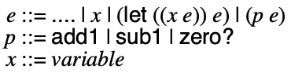
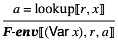
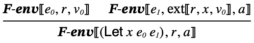
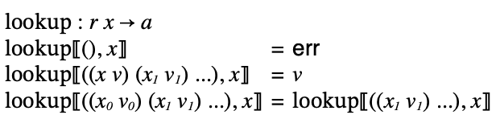
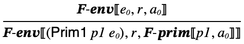
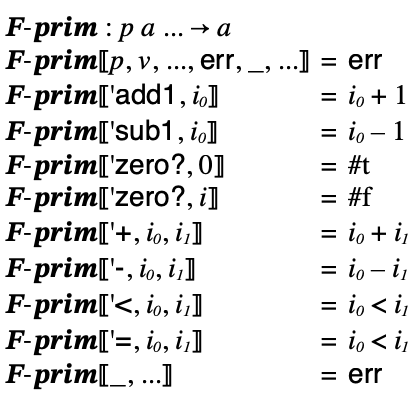

11 Fraud: local binding, variables, and binary operations
To be is to be the value of a variable.
11.1 Binding, variables, and binary operations
Let’s now consider add a notion of local binding and the ability to use binary operations to our target language.
We’ll call it Fraud.
First, let’s deal with the issue of variables and variable bindings.
We will use the following syntax to bind local variables:
(let ((id0 e0)) e)
This form binds the identifier id0 to value of e0 within the scope of e.
This is a specialization of Racket’s own local binding form, which allows for any number of bindings to be made with let:
(let ((id0 e0) ...) e)
We adopt this specialization of Racket’s let syntax so that you can always take a Fraud program and run it in Racket to confirm what it should produce.
Adding a notion of variable binding also means we need to add variables to the syntax of expressions.
Together this leads to the following grammar for Fraud:

Which can be modeled with the following data type definition:
#lang racket ;; type Expr = ;; ... ;; | (Let Id Expr Expr) ;; | (Var Id) ;; type Id = Symbol ... (struct Let (x e1 e2) #:prefab) (struct Var (x) #:prefab)
Now for binary operations...
You may have noticed that up until this point, evaluating compound expressions in our language always depend upon the result of a single subexpression. For example, (add1 e) depends upon the result of e, (zero? e) depends upon e, and so on. Even expressions that involve multiple subexpressions such as (if e0 e1 e2) really only depend on e0 to determine which of e1 or e2 to evaluate. And in the case of (begin e0 e1), first we determine the value of e0 and then e1, but these values are never combined in any way.
Let’s now consider what happens when we have multiple subexpressions whose results must be combined in order to evaluate an expression. As an example, consider (+ e0 e1). We must evaluate both e0 and e1 and sum their results.
What’s new are the following binary operations:
(+ e0 e1) (- e0 e1) (< e0 e1) (= e0 e1)
This leads to the following revised grammar for Fraud:

We can model it as a datatype as usual:
#lang racket ;; type Expr = ;; ... ;; | (Prim2 Op2 Expr Expr) ;; type Op2 = '+ | '- | '< | '= ... (struct Prim2 (p e1 e2) #:prefab)
11.2 Meaning of Fraud programs
The meaning of Fraud programs depends on the form of the expression and in the case of integers, increments, and decrements, the meaning is the same as in the prior languages.
The two new forms are let-expressions and variables.
the meaning of a let expression (let ((x e0)) e) is the meaning of e (the body of the let) when x means the value of e0 (the right hand side of the let),
the meaning of a variable x depends on the context in which it is bound. It means the value of the right-hand side of the nearest enclosing let expression that binds x. If there is no such enclosing let expression, the variable is meaningless.
Let’s consider some examples:
x: this expression is meaningless on its own.
(let ((x 7)) x): this means 7, since the body expression, x, means 7 because the nearest enclosing binding for x is to 7, which means 7.
(let ((x 7)) 2): this means 2 since the body expression, 2, means 2.
(let ((x 7)) (add1 x)): this means 8 since the body expression, (add1 x), means one more than x and x means 7 because the nearest enclosing binding for x is to 7.
(let ((x (add1 7))) x): this means 8 since the body expression, x, means 8 because the nearest enclosing binding for x is to (add1 7) which means 8.
(let ((x 7)) (let ((y 2)) x)): this means 7 since the body expression, (let ((y 2)) x), means 2 since the body expression, x, means 7 since the nearest enclosing binding for x is to 7.
(let ((x 7)) (let ((x 2)) x)): this means 2 since the body expression, (let ((x 2)) x), means 2 since the body expression, x, means 2 since the nearest enclosing binding for x is to 2.
(let ((x (add1 x))) x): this is meaningless, since the right-hand side expression, (add1 x) is meaningless because x has no enclosing let that binds it.
(let ((x 7)) (let ((x (add1 x))) x)): this means 8 because the body expression (let ((x (add1 x))) x) means 8 because the body expression, x, is bound to (add1 x) is in the nearest enclosing let expression that binds x and (add1 x) means 8 because it is one more than x where x is bound to 7 in the nearest enclosing let that binds it.
Make sure you have a good understanding of how binding work in these examples before moving on. Remember: you can always check your understanding by pasting expressions into Racket and seeing what it produces, or better yet, write examples in DrRacket and hover over identifiers to see arrows between variable bindings and their occurrences.
One thing that should be clear from these examples is that the meaning of a sub-expression is not determined by the form of that expression alone. For example, x could mean 7, or it could mean 8, or it could be meaningless, or it could mean 22, etc. It depends on the context in which it occurs. So in formulating the meaning of an expression, this context must be taken into account.
Thinking more about what information we need to keep track of reveals that when considering the meaning of a let’s body, we need to know that the variable it’s binding means the value of the right-hand expression. Since a program potentially consists of nested let expressions, we will need to keep track of some number of pairs of variables and their meaning. We will refer to this contextual information as an environment.
To keep things simple, we omit the treatment of IO in the semantics, but it’s easy enough to incorporate back in if desired following the template of Evildoer: change the world a couple nibbles at a time.
The meaning of a variable is resolved by looking up its meaning in the environment. The meaning of a let will depend on the meaning of its body with an extended environment that associates its variable binding to the value of the right hand side.
The heart of the semantics is an auxiliary relation, , which relates an expression and an environement to the integer the expression evaluates to (in the given environment):
 
These rely on two functions: one for extending an environment with a variable binding and one for lookup up a variable binding in an environment:





The operational semantics for Fraud is then defined as a binary relation
 , which says that (e,i) in
, which says that (e,i) in  ,
only when e evaluates to i in the empty environment
according to
,
only when e evaluates to i in the empty environment
according to  :
:

With the semantics of let and variables out of the way, extending the Fraud semantics to hand binary operations is pretty straightforward. For (+ e0 e1), the meaning is the sum of the meanings of e0 and e1, when they mean integers, otherwise the meaning is an error.
The handling of primitives occurs in the following rule:
It makes use of an auxiliary judgment for interpreting primitives:

The interpreter closely mirrors the semantics. The top-level interp function relies on a helper function interp-env that takes an expression and environment and computes the result. It is defined by structural recursion on the expression. Environments are represented as lists of associations between variables and integers. There are two helper functions for ext and lookup:
#lang racket (provide interp interp-env) (require "ast.rkt" "interp-prim.rkt") ;; type Answer = Value | 'err ;; type Value = ;; | Integer ;; | Boolean ;; | Character ;; | Eof ;; | Void ;; type REnv = (Listof (List Id Value)) ;; Expr -> Answer (define (interp e) (interp-env e '())) ;; Expr Env -> Answer (define (interp-env e r) (match e [(Int i) i] [(Bool b) b] [(Char c) c] [(Eof) eof] [(Var x) (lookup r x)] [(Prim0 p) (interp-prim0 p)] [(Prim1 p e) (match (interp-env e r) ['err 'err] [v (interp-prim1 p v)])] [(Prim2 p e1 e2) (match (interp-env e1 r) ['err 'err] [v1 (match (interp-env e2 r) ['err 'err] [v2 (interp-prim2 p v1 v2)])])] [(If p e1 e2) (match (interp-env p r) ['err 'err] [v (if v (interp-env e1 r) (interp-env e2 r))])] [(Begin e1 e2) (match (interp-env e1 r) ['err 'err] [v (interp-env e2 r)])] [(Let x e1 e2) (match (interp-env e1 r) ['err 'err] [v (interp-env e2 (ext r x v))])])) ;; Env Id -> Value (define (lookup r x) (match r [(cons (list y val) r) (if (symbol=? x y) val (lookup r x))])) ;; Env Id Value -> Env (define (ext r v val) (cons (list v val) r))
We can confirm the interpreter computes the right result for the examples given earlier:
Examples
> (interp (parse '(let ((x 7)) x))) 7
> (interp (parse '(let ((x 7)) 2))) 2
> (interp (parse '(let ((x 7)) (add1 x)))) 8
> (interp (parse '(let ((x (add1 7))) x))) 8
> (interp (parse '(let ((x 7)) (let ((y 2)) x)))) 7
> (interp (parse '(let ((x 7)) (let ((x 2)) x)))) 2
> (interp (parse '(let ((x 7)) (let ((x (add1 x))) x)))) 8
We can see that it works as expected:
Examples
> (interp (parse '(+ 3 4))) 7
> (interp (parse '(+ 3 (+ 2 2)))) 7
> (interp (parse '(+ #f 8))) 'err
Interpreter Correctness: For all Fraud expressions
e and values v, if (e,v) in
 , then (interp e) equals
v.
, then (interp e) equals
v.
11.3 Lexical Addressing
Just as we did with Dupe: a duplicity of types, the best way of understanding the forthcoming compiler is to write a “low-level” interpreter that explains some of the ideas used in the compiler without getting bogged down in code generation details.
At first glance at interp, it would seem we will need to generate code for implementing the REnv data structure and its associated operations: lookup and ext. REnv is an inductively defined data type, represented in the interpreter as a list of lists. Interpreting a variable involves recursively scanning the environment until the appropriate binding is found. This would take some doing to accomplish in x86.
However...
It is worth noting some invariants about environments created during the running of interp. Consider some subexpression e of the program. What environment will be used whenever e is interpreted? Well, it will be a mapping of every variable bound outside of e. It’s not so easy to figure out what these variables will be bound to, but the skeleton of the environment can be read off from the program structure.
For example:
(let ((x ...)) (let ((y ...)) (let ((z ...)) e)))
'((z ...) (y ...) (x ...))
Moreover, every free occurrence of x in e will resolve to the value in the third element of the environment; every free occurrence of y in e will resolve to the second element; etc.
This suggests that variable locations can be resolved statically using lexical addresses. The lexical address of a variable is the number of let-bindings between the variable occurrence and the let that binds it.
So for example:
(let ((x ...)) x): the occurrence of x has a lexical address of 0; there are no bindings between the let that binds x and its occurrence.
(let ((x ...)) (let ((y ...)) x)): the occurrence of x has a lexical address of 1 since the let-binding of y sits between the let-binding of x and its occurrence.
We can view a variable name as just a placeholder for the lexical address; it tells us which binder the variable comes from.
Using this idea, let’s build an alternative interpreter that operates over an intermediate form of expression that has no notion of variables, but just lexical addresses:
; type IExpr = ; | (Eof) ; | (Int Integer) ; | (Bool Boolean) ; | (Char Character) ; | (Prim0 Op0) ; | (Prim1 Op1 IExpr) ; | (Prim2 Op2 IExpr IExpr) ; | (If IExpr IExpr IExpr) ; | (Begin IExpr IExpr) ; | (Let '_ IExpr IExpr) ; | (Var Addr) ; type Addr = Natural
Notice that variables have gone away, replaced by a (Var Natural) form. The let binding form no longer binds a variable name either.
The idea is that we will translate expression (Expr) like:
(Let 'x (Int 7) (Var 'x))
into intermediate expressions (IExpr) like:
(Let '_ (Int 7) (Var 0))
And:
(Let 'x (Int 7) (Let 'y (Int 9) (Var 'x)))
into:
(Let '_ (Int 7) (Let '_ (Int 9) (Var 1)))
Similar to how interp is defined in terms of a helper function that takes an environment mapping variables to their value, the translate function will be defined in terms of a helper function that takes an environment mapping variables to their lexical address.
The lexical environment will just be a list of variable names. The address of a variable occurrence is count of variable names that occur before it in the list. When a variable is bound (via-let) the list grows:
#lang racket (provide translate) (require "ast.rkt") ;; type IExpr = ;; | (Eof) ;; | (Int Integer) ;; | (Bool Boolean) ;; | (Char Character) ;; | (Prim0 Op0) ;; | (Prim1 Op1 IExpr) ;; | (Prim2 Op2 IExpr IExpr) ;; | (If IExpr IExpr IExpr) ;; | (Begin IExpr IExpr) ;; | (Let '_ IExpr IExpr) ;; | (Var Addr) ;; type Addr = Natural ;; type LEnv = (Listof Id) ;; Expr -> IExpr (define (translate e) (translate-e e '())) ;; Expr LEnv -> IExpr (define (translate-e e r) (match e [(Eof) e] [(Int i) e] [(Bool b) e] [(Char c) e] [(Prim0 p) e] [(Prim1 p e0) (Prim1 p (translate-e e0 r))] [(Prim2 p e0 e1) (Prim2 p (translate-e e0 r) (translate-e e1 r))] [(If e0 e1 e2) (If (translate-e e0 r) (translate-e e1 r) (translate-e e2 r))] [(Begin e0 e1) (Begin (translate-e e0 r) (translate-e e1 r))] [(Let x e0 e1) (Let '_ (translate-e e0 r) (translate-e e1 (cons x r)))] [(Var x) (Var (lexical-address x r))])) ;; Id LEnv -> Addr (define (lexical-address x r) (match r [(cons y r) (match (symbol=? x y) [#t 0] [#f (add1 (lexical-address x r))])]))
Notice that translate is a kind of mini-compiler that compiles Exprs to IExprs. It’s only job is to eliminate variable names by replacing variable occurrences with their lexical addresses. It does a minor amount of syntax checking while it’s at it by raising a (compile-time) error in the case of unbound variables.
We can try out some examples to confirm it works as expected.
Examples
> (translate (Let 'x (Int 7) (Var 'x))) '#s(Let _ #s(Int 7) #s(Var 0))
> (translate (Let 'x (Int 7) (Let 'y (Int 9) (Var 'x)))) '#s(Let _ #s(Int 7) #s(Let _ #s(Int 9) #s(Var 1)))
The interpreter for IExprs will still have an environment data structure, however it will be simpler than the association list we started with. The run-time environment will consist only of a list of values; the lexical address of (what used to be a) variable indicates the position in this list. When a value is bound by a let, the list grows:
#lang racket (provide (all-defined-out)) (require "ast.rkt" "translate.rkt" "interp-prim.rkt") ;; type VEnv = (Listof Value) ;; Expr -> Answer (define (interp e) (interp-env (translate e) '())) ;; Expr VEnv -> Answer (define (interp-env e r) (match e [(Int i) i] [(Bool b) b] [(Char c) c] [(Eof) eof] [(Var a) (list-ref r a)] [(Prim0 p) (interp-prim0 p)] [(Prim1 p e) (match (interp-env e r) ['err 'err] [v (interp-prim1 p v)])] [(Prim2 p e1 e2) (match (interp-env e1 r) ['err 'err] [v1 (match (interp-env e2 r) ['err 'err] [v2 (interp-prim2 p v1 v2)])])] [(If p e1 e2) (match (interp-env p r) ['err 'err] [v (if v (interp-env e1 r) (interp-env e2 r))])] [(Begin e1 e2) (match (interp-env e1 r) ['err 'err] [v (interp-env e2 r)])] [(Let '_ e1 e2) (match (interp-env e1 r) ['err 'err] [v (interp-env e2 (cons v r))])]))
Try to convince yourself that the two version of interp compute the same function.
11.4 Compiling lets and variables
Suppose we want to compile (let ((x 7)) (add1 x)). There are two new forms we need to compile: the (let ((x ...)) ...) part and the x part in the body.
We already know how to compile the (add1 ...) part and the 7 part.
What needs to happen? Compiling the 7 part will emit instructions that, when run, leave 7 in the 'rax register. Compiling the (add1 ...) part relies on the result of evaluating it’s subexpression to be in 'rax when it increments it. So, compile the variable binding needs to stash the 7 somewhere and compiling the variable occurrence needs to retrieve that stashed value. After the let expression has been run, the stashed value should go away since the variable is no longer in scope.
This “stashing” of values follows a stack discipline. When entering a let, after the right-hand side has been run, the result should be pushed. When evaluating a variable occurrence, the bound value is on the stack. After exiting the let, the stack can be popped.
Suppose we want to compile (let ((x 7)) (let ((y 2)) (add1 x))). Using the intuition developed so far, we should push 7, push 2, and then run the body.
(seq (Mov 'rax (values->bits 7)) (Push 'rax) (Mov 'rax (values->bits 2)) (Push 'rax))
But notice that the value of x is no longer on the top of the stack; y is. So to retrieve the value of x we need skip past the y. But calculating these offsets is pretty straightforward. In this example there is one binding between the binding of x and this occurrence, so to reference x, load the second element on the stack. The complete expression can be compiled as:
(seq (Mov 'rax (values->bits 7)) (Push 'rax) (Mov 'rax (values->bits 2)) (Push 'rax) ; (add1 x) (Mov 'rax (Offset 'rsp 8)) (Add 'rax (value->bits 1)))
When the let expression is complete, the bindings for x and y need to be popped off the stack. To do so, we can simply increment 'rsp since the values of x and y are irrelevant.
; complete compilation of (let ((x 7)) (let ((y 2)) (add1 x))): (seq (Mov 'rax (values->bits 7)) (Push 'rax) ; bind x to 7 (Mov 'rax (values->bits 2)) (Push 'rax) ; bind y to 2 (Mov 'rax (Offset 'rsp 8)) ; ref x (Add 'rax (value->bits 1)) ; add1 (Add 'rsp 8) ; pop y (Add 'rsp 8)) ; pop x
Since we push every time we enter a let and pop every time we leave, the number of bindings between an occurrence and its binder is exactly the offset from the top of the stack we need use; in other words, the compiler uses lexical addresses just like the alternative interperter above and the stack of values plays the role of the run-time envivornment.
This means the compiler will need to use a compile-time environment to track bound variables and make use of a lookup function to compute the lexical address of variable references just like the interpreter. The only (trivial) difference is the addresses are given in word offsets, i.e. each binding adds 8 to the address.
11.5 Compiling binary operations
Binary expressions are easy to deal with at the level of the semantics and interpreter. However things are more complicated at the level of the compiler.
To see the problem consider blindly following the pattern we used (and ignoring type errors for the moment):
; Expr Expr CEnv -> Asm (define (compile-+ e0 e1 c) (seq (compile-e e0 c) (compile-e e1 c) (Add 'rax ????)))
The problem here is that executing e0 places its result in register 'rax, but then executing e1 places its result in 'rax, overwriting the value of e0.
It may be tempting to use another register to stash away the result of the first subexpression:
; Expr Expr CEnv -> Asm (define (compile-+ e0 e1 c) (seq (compile-e e0 c) (Mov 'r8 'rax) (compile-e e1 c) (Add 'rax 'r8)))
Can you think of how this could go wrong?
To come up with a general solution to this problem, we need to save the result of e0 and then retrieve it after computing e1 and it’s time to sum.
Note that this issue only comes up when e0 is a serious expression, i.e. an expression that must do some computation. If e0 were a literal integer or a variable, we could emit working code. For example:
; Integer Expr CEnv -> Asm ; A special case for compiling (+ i0 e1) (define (compile-+-int i0 e1 c) (seq (compile-e e1 c) (Add 'rax (value->bits i0)))) ; Id Expr CEnv -> Asm ; A special case for compiling (+ x0 e1) (define (compile-+-var x0 e1) (let ((i (lookup x0 c))) (seq (compile-e e1 c) (Add 'rax (Offset 'rsp i)))))
The latter suggests a general solution could be to transform binary primitive applications into a let form that binds the first subexpression to a variable and then uses the compile-+-var function above. The idea is that every time the compiler encounters (+ e0 e1), we transform it to (let ((x e0)) (+ x e1)). For this to work out, x needs to be some variable that doesn’t appear free in e1. This transformation is what’s called ANF (administrative normal form) and is a widely used intermediate representation for compilers.
But, we can also solve the problem more directly by considering the code that is generated for the ANF style expression above.
Consider the lexical address of x in the transformed code above. It is always 0 because the transformation puts the let immediately around the occurrence of x. So if we’re compiling (+ e0 e1) in environment c using this approach, we know the value of e0 will live at (Offset 'rsp 0). There’s no need for a let binding or a fresh variable name. And this observation enables us to write a general purpose compiler for binary primitives that doesn’t require any program transformation: we simply push the value of e0 on the top of the stack and retrieve it later.
Here is a first cut:
; Expr Expr CEnv -> Asm (define (compile-+ e0 e1 c) (let ((x (gensym))) ; generate a fresh variable (seq (compile-e e0 c) (Push 'rax) (compile-e e1 (cons x c)) (Pop 'r8) (Add 'rax 'r8))))
There are a couple things to notice. When compiling e1 in environment (cons x c), we know that no variable in e1 resolves to x because x is a freshly gensym’d symbol. Putting (an unreferenced) x in the environment serves only to “bump up” by one the offset of any variable bound after x so as to not override the spot where e0’s values lives. We can accomplish the same thing by sticking in something that no variable is equal to: #f:
(define (compile-+ e0 e1 c) (seq (compile-e e0 c) (Push 'rax) (compile-e e1 (cons #f c)) (Pop 'r8) (Add 'rax 'r8)))
With variables, lets, and binary operations in place, we can complete the compiler.
11.6 The wrinkle of stack alignment
There is a wrinkle that comes from using the stack to hold variable bindings and intermediate results, which has to do with how it interacts with our previous language features. In particular, we were previously able to take a fairly simple approach to implement calls to C functions in the runtime system.
Recall from Calling C functions from a86 that the stack needs to be 16-byte aligned before issuing a Call instruction. Since the runtime calls the 'entry label to execute the code emitted by the compiler, and this pushes an 8-byte address on the stack, the stack is misaligned at the entry to our code. Our solution was to immediately subtract 8 from 'rsp at entry and add back 8 just before returning. This way any calls, such as calls to read_byte, write_byte, or even raise_error were in an aligned state.
This simple approach worked since the code emitted by the compiler never modified the stack (other than making calls). But now what happens since code makes frequent use of the stack?
Consider the following two, seemingly equivalent, examples:
(write-byte 97)
(let ((x 97)) (write-byte x))
Assuming the stack is aligned before making the call to the C function write_byte in the first example, means that it will be misaligned in second example, since the code would have first Pushed 97 on the stack. Symmetrically, if the stack were aligned in the second example, then it couldn’t be in the first.
So our previous once-and-done solution to the stack alignment issue will no longer work. Instead, we will have to emit code that aligns the stack at every Call and this adjustment will depend upon the compile-time environment in which the call occurs.
For example, let’s assume we no longer adjust the stack at the entry of our code. The first example (occuring in the empty compile-time environment) will need subtract 8 to the stack pointer, call, and then add 8 to the stack pointer. In the second example, the write-byte call occurs in a compile-time environment of '(x). The single binding being pushed on the stack, in combination with the original call from the run-time system, results in an aligned stack, so no adjustment is needed. Had there been two elements on the stack, an adjustment similar to the first example would be needed. In other words, if there are an even number of elements on the stack, we need to adjust.
This means, compared to the previous compiler for primitive operations, each part of the compiler that may issue Call instructions will need to be informed of the current environment.
We will use a helper function (pad-stack c) and (unpad-stack c) that takes a compile-time environment and produce instructions to align and revert the stack (if needed) before and after Calls.
Signalling errors is likewise complicated and we handle it by having two target labels that can be jumped to when an error happens: 'raise_error and 'raise_error_align. The latter adds 8 to 'rsp and jumps to 'raise_error. Since we don’t expect the the error handler function to return, we don’t need to worry about adjusting the stack afterward. We use another helper function (error-label c) that computes the appropriate target based on the given compile-time environment.
Here is the compiler for primitives that incorporates all of these stack-alignment issues, but is otherwise the same as before:
#lang racket (provide (all-defined-out)) (require "ast.rkt" "types.rkt" a86/ast) (define rax 'rax) ; return (define rdi 'rdi) ; arg (define r8 'r8) ; scratch in +, - (define r9 'r9) ; scratch in assert-type (define rsp 'rsp) ; stack ;; Op0 CEnv -> Asm (define (compile-op0 p c) (match p ['void (seq (Mov rax val-void))] ['read-byte (seq (pad-stack c) (Call 'read_byte) (unpad-stack c))] ['peek-byte (seq (pad-stack c) (Call 'peek_byte) (unpad-stack c))])) ;; Op1 CEnv -> Asm (define (compile-op1 p c) (match p ['add1 (seq (assert-integer rax c) (Add rax (value->bits 1)))] ['sub1 (seq (assert-integer rax c) (Sub rax (value->bits 1)))] ['zero? (let ((l1 (gensym))) (seq (assert-integer rax c) (Cmp rax 0) (Mov rax val-true) (Je l1) (Mov rax val-false) (Label l1)))] ['char? (let ((l1 (gensym))) (seq (And rax mask-char) (Xor rax type-char) (Cmp rax 0) (Mov rax val-true) (Je l1) (Mov rax val-false) (Label l1)))] ['char->integer (seq (assert-char rax c) (Sar rax char-shift) (Sal rax int-shift))] ['integer->char (seq (assert-codepoint c) (Sar rax int-shift) (Sal rax char-shift) (Xor rax type-char))] ['eof-object? (eq-imm val-eof)] ['write-byte (seq (assert-byte c) (pad-stack c) (Mov rdi rax) (Call 'write_byte) (unpad-stack c) (Mov rax val-void))])) ;; Op2 CEnv -> Asm (define (compile-op2 p c) (match p ['+ (seq (Pop r8) (assert-integer r8 c) (assert-integer rax c) (Add rax r8))] ['- (seq (Pop r8) (assert-integer r8 c) (assert-integer rax c) (Sub r8 rax) (Mov rax r8))] ['< (seq (Pop r8) (assert-integer r8 c) (assert-integer rax c) (Cmp r8 rax) (Mov rax val-true) (let ((true (gensym))) (seq (Jl true) (Mov rax val-false) (Label true))))] ['= (seq (Pop r8) (assert-integer r8 c) (assert-integer rax c) (Cmp r8 rax) (Mov rax val-true) (let ((true (gensym))) (seq (Je true) (Mov rax val-false) (Label true))))])) ;;;;;;;;;;;;;;;;;;;;;;;;;;;;;;;;;;;;;; (define (assert-type mask type) (λ (arg c) (seq (Mov r9 arg) (And r9 mask) (Cmp r9 type) (Jne (error-label c))))) (define (type-pred mask type) (let ((l (gensym))) (seq (And rax mask) (Cmp rax type) (Mov rax (value->bits #t)) (Je l) (Mov rax (value->bits #f)) (Label l)))) (define assert-integer (assert-type mask-int type-int)) (define assert-char (assert-type mask-char type-char)) (define (assert-codepoint c) (let ((ok (gensym))) (seq (assert-integer rax c) (Cmp rax (value->bits 0)) (Jl (error-label c)) (Cmp rax (value->bits 1114111)) (Jg (error-label c)) (Cmp rax (value->bits 55295)) (Jl ok) (Cmp rax (value->bits 57344)) (Jg ok) (Jmp (error-label c)) (Label ok)))) (define (assert-byte c) (seq (assert-integer rax c) (Cmp rax (value->bits 0)) (Jl (error-label c)) (Cmp rax (value->bits 255)) (Jg (error-label c)))) ;; Imm -> Asm (define (eq-imm imm) (let ((l1 (gensym))) (seq (Cmp rax imm) (Mov rax val-true) (Je l1) (Mov rax val-false) (Label l1)))) ;; CEnv -> Asm ;; Pad the stack to be aligned for a call (define (pad-stack c) (match (even? (length c)) [#t (seq (Sub rsp 8))] [#f (seq)])) ;; CEnv -> Asm ;; Undo the stack alignment after a call (define (unpad-stack c) (match (even? (length c)) [#t (seq (Add rsp 8))] [#f (seq)])) ;; CEnv -> Label ;; Determine correct error handler label to jump to. (define (error-label c) (match (even? (length c)) [#t 'raise_error] [#f 'raise_error_align]))
11.7 Complete Fraud compiler
We can now take a look at the main compiler for expressions. Notice the compile-time environment which is weaved through out the compile-e function and its subsidiaries, which is critical in compile-variable and extended in compile-let. It is passed to the compile-op0, compile-op1 and compile-op2 functions for the purposes of stack alignment before calls into the runtime system.
#lang racket (provide (all-defined-out)) (require "ast.rkt" "types.rkt" "compile-ops.rkt" a86/ast) ;; Registers used (define rax 'rax) ; return (define rbx 'rbx) ; heap (define rsp 'rsp) ; stack (define rdi 'rdi) ; arg ;; type CEnv = [Listof Variable] ;; Expr -> Asm (define (compile e) (prog (Extern 'peek_byte) (Extern 'read_byte) (Extern 'write_byte) (Extern 'raise_error) (Global 'entry) (Label 'entry) (compile-e e '()) (Ret) (Label 'raise_error_align) (Sub rsp 8) (Jmp 'raise_error))) ;; Expr CEnv -> Asm (define (compile-e e c) (match e [(Int i) (compile-value i)] [(Bool b) (compile-value b)] [(Char c) (compile-value c)] [(Eof) (compile-value eof)] [(Var x) (compile-variable x c)] [(Prim0 p) (compile-prim0 p c)] [(Prim1 p e) (compile-prim1 p e c)] [(Prim2 p e1 e2) (compile-prim2 p e1 e2 c)] [(If e1 e2 e3) (compile-if e1 e2 e3 c)] [(Begin e1 e2) (compile-begin e1 e2 c)] [(Let x e1 e2) (compile-let x e1 e2 c)])) ;; Value -> Asm (define (compile-value v) (seq (Mov rax (value->bits v)))) ;; Id CEnv -> Asm (define (compile-variable x c) (let ((i (lookup x c))) (seq (Mov rax (Offset rsp i))))) ;; Op0 CEnv -> Asm (define (compile-prim0 p c) (compile-op0 p c)) ;; Op1 Expr CEnv -> Asm (define (compile-prim1 p e c) (seq (compile-e e c) (compile-op1 p c))) ;; Op2 Expr Expr CEnv -> Asm (define (compile-prim2 p e1 e2 c) (seq (compile-e e1 c) (Push rax) (compile-e e2 (cons #f c)) (compile-op2 p c))) ;; Expr Expr Expr CEnv -> Asm (define (compile-if e1 e2 e3 c) (let ((l1 (gensym 'if)) (l2 (gensym 'if))) (seq (compile-e e1 c) (Cmp rax val-false) (Je l1) (compile-e e2 c) (Jmp l2) (Label l1) (compile-e e3 c) (Label l2)))) ;; Expr Expr CEnv -> Asm (define (compile-begin e1 e2 c) (seq (compile-e e1 c) (compile-e e2 c))) ;; Id Expr Expr CEnv -> Asm (define (compile-let x e1 e2 c) (seq (compile-e e1 c) (Push rax) (compile-e e2 (cons x c)) (Add rsp 8))) ;; Id CEnv -> Integer (define (lookup x cenv) (match cenv ['() (error "undefined variable:" x)] [(cons y rest) (match (eq? x y) [#t 0] [#f (+ 8 (lookup x rest))])]))
Notice that the lookup function computes a lexical address from an identifier and compile-time environment, just like the lexical-address function in translate.rkt. The only difference is addresses are calculated as byte offsets, hence the addition of 8 instead of 1 in the recursive case.
Let’s take a look at some examples of lets and variables:
Examples
> (define (show e c) (compile-e (parse e) c)) > (show 'x '(x)) (list (Mov 'rax (Offset 'rsp 0)))
> (show 'x '(z y x)) (list (Mov 'rax (Offset 'rsp 16)))
> (show '(let ((x 7)) x) '())
(list
(Mov 'rax 14)
(Push 'rax)
(Mov 'rax (Offset 'rsp 0))
(Add 'rsp 8))
> (show '(let ((x 7)) 2) '())
(list
(Mov 'rax 14)
(Push 'rax)
(Mov 'rax 4)
(Add 'rsp 8))
> (show '(let ((x 7)) (add1 x)) '())
(list
(Mov 'rax 14)
(Push 'rax)
(Mov 'rax (Offset 'rsp 0))
(Mov 'r9 'rax)
(And 'r9 1)
(Cmp 'r9 0)
(Jne 'raise_error_align)
(Add 'rax 2)
(Add 'rsp 8))
> (show '(let ((x (add1 7))) x) '())
(list
(Mov 'rax 14)
(Mov 'r9 'rax)
(And 'r9 1)
(Cmp 'r9 0)
(Jne 'raise_error)
(Add 'rax 2)
(Push 'rax)
(Mov 'rax (Offset 'rsp 0))
(Add 'rsp 8))
> (show '(let ((x 7)) (let ((y 2)) x)) '())
(list
(Mov 'rax 14)
(Push 'rax)
(Mov 'rax 4)
(Push 'rax)
(Mov 'rax (Offset 'rsp 8))
(Add 'rsp 8)
(Add 'rsp 8))
> (show '(let ((x 7)) (let ((x 2)) x)) '())
(list
(Mov 'rax 14)
(Push 'rax)
(Mov 'rax 4)
(Push 'rax)
(Mov 'rax (Offset 'rsp 0))
(Add 'rsp 8)
(Add 'rsp 8))
> (show '(let ((x 7)) (let ((x (add1 x))) x)) '())
(list
(Mov 'rax 14)
(Push 'rax)
(Mov 'rax (Offset 'rsp 0))
(Mov 'r9 'rax)
(And 'r9 1)
(Cmp 'r9 0)
(Jne 'raise_error_align)
(Add 'rax 2)
(Push 'rax)
(Mov 'rax (Offset 'rsp 0))
(Add 'rsp 8)
(Add 'rsp 8))
Examples
> (current-objs '("runtime.o"))
> (define (tell e) (match (asm-interp (compile (parse e))) ['err 'err] [b (bits->value b)])) > (tell '(let ((x 7)) x)) 7
> (tell '(let ((x 7)) 2)) 2
> (tell '(let ((x 7)) (add1 x))) 8
> (tell '(let ((x (add1 7))) x)) 8
> (tell '(let ((x 7)) (let ((y 2)) x))) 7
> (tell '(let ((x 7)) (let ((x 2)) x))) 2
> (tell '(let ((x 7)) (let ((x (add1 x))) x))) 8
Here are some examples of binary operations:
Examples
> (show '(+ 1 2) '())
(list
(Mov 'rax 2)
(Push 'rax)
(Mov 'rax 4)
(Pop 'r8)
(Mov 'r9 'r8)
(And 'r9 1)
(Cmp 'r9 0)
(Jne 'raise_error)
(Mov 'r9 'rax)
(And 'r9 1)
(Cmp 'r9 0)
(Jne 'raise_error)
(Add 'rax 'r8))
> (show '(+ (+ 3 4) (+ 1 2)) '())
(list
(Mov 'rax 6)
(Push 'rax)
(Mov 'rax 8)
(Pop 'r8)
(Mov 'r9 'r8)
(And 'r9 1)
(Cmp 'r9 0)
(Jne 'raise_error)
(Mov 'r9 'rax)
(And 'r9 1)
(Cmp 'r9 0)
(Jne 'raise_error)
(Add 'rax 'r8)
(Push 'rax)
(Mov 'rax 2)
(Push 'rax)
(Mov 'rax 4)
(Pop 'r8)
(Mov 'r9 'r8)
(And 'r9 1)
(Cmp 'r9 0)
(Jne 'raise_error_align)
(Mov 'r9 'rax)
(And 'r9 1)
(Cmp 'r9 0)
(Jne 'raise_error_align)
(Add 'rax 'r8)
(Pop 'r8)
(Mov 'r9 'r8)
(And 'r9 1)
(Cmp 'r9 0)
(Jne 'raise_error)
(Mov 'r9 'rax)
(And 'r9 1)
(Cmp 'r9 0)
(Jne 'raise_error)
(Add 'rax 'r8))
> (show '(+ x y) '(x y))
(list
(Mov 'rax (Offset 'rsp 0))
(Push 'rax)
(Mov 'rax (Offset 'rsp 16))
(Pop 'r8)
(Mov 'r9 'r8)
(And 'r9 1)
(Cmp 'r9 0)
(Jne 'raise_error)
(Mov 'r9 'rax)
(And 'r9 1)
(Cmp 'r9 0)
(Jne 'raise_error)
(Add 'rax 'r8))
Examples
> (tell '(+ 1 2)) 3
> (tell '(+ (+ 3 4) (+ 1 2))) 10
> (tell '(let ((y 3)) (let ((x 2)) (+ x y)))) 5
Finally, we can see the stack alignment issues in action:
Examples
> (show '(write-byte 97) '())
(list
(Mov 'rax 194)
(Mov 'r9 'rax)
(And 'r9 1)
(Cmp 'r9 0)
(Jne 'raise_error)
(Cmp 'rax 0)
(Jl 'raise_error)
(Cmp 'rax 510)
(Jg 'raise_error)
(Sub 'rsp 8)
(Mov 'rdi 'rax)
(Call 'write_byte)
(Add 'rsp 8)
(Mov 'rax 15))
> (show '(write-byte 97) '(x))
(list
(Mov 'rax 194)
(Mov 'r9 'rax)
(And 'r9 1)
(Cmp 'r9 0)
(Jne 'raise_error_align)
(Cmp 'rax 0)
(Jl 'raise_error_align)
(Cmp 'rax 510)
(Jg 'raise_error_align)
(Mov 'rdi 'rax)
(Call 'write_byte)
(Mov 'rax 15))
> (show '(add1 #f) '())
(list
(Mov 'rax 7)
(Mov 'r9 'rax)
(And 'r9 1)
(Cmp 'r9 0)
(Jne 'raise_error)
(Add 'rax 2))
> (show '(add1 #f) '(x))
(list
(Mov 'rax 7)
(Mov 'r9 'rax)
(And 'r9 1)
(Cmp 'r9 0)
(Jne 'raise_error_align)
(Add 'rax 2))